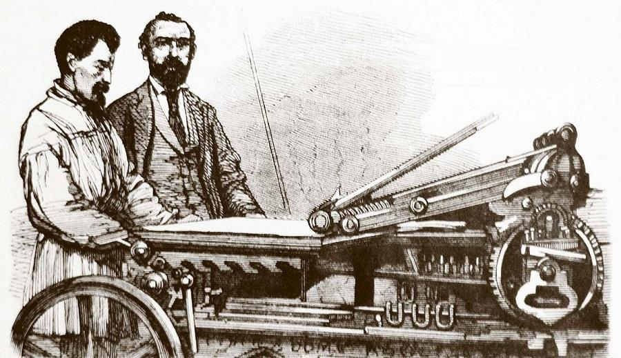

Es el periodo comprendido entre el Descubrimiento de América y la Revolución Francesa.
En este periodo destacan los grandes descubrimientos geográficos como el descubrimiento de América, el Renacimiento, la Reforma Protestante y la Contrarreforma.
Con el crecimiento de las ciudades se produjo un cambio en el sistema económico: la economía feudal dio paso a los primeros indicios del sistema capitalista.
Toda esta actividad condujo a la necesidad de buscar nuevas tierras donde conseguir las materias primas, necesarias para fabricar los productos. Además, significó la apertura de nuevos mercados donde venderlos.
En esta época aparecen muchos inventos. Tres innovaciones tecnológicas destacan sobre las demás: la brújula, la cartografía y las armas de fuego.

Características
La Edad Moderna se corresponde al periodo que destacan los valores de la modernidad ( el progreso, la comunicación, la razón). La Edad Moderna se ha ido alejando.
Esta es la época de la invención de las herramientas. La historia moderna esta relacionada con la historia de la ciencia, el numero de descubrimientos de nuevos conocimientos ha permitido crear nuevas cosas.
Las innovaciones tecnológicas están afectadas por las tradiciones culturales de la sociedad. La aparición de la imprenta moderna, hacia la mitad del Siglo XV. Tras la imprenta viene la revolución científica.
Algunos avances tecnológicos de esta etapa:
Avances Tecnologicos
El Microscopio
El Telescopio
La Calculadora Mecánica
La Maquina de Vapor
El Pararrayos
El Barómetro
El Automóvil
Locomotora de Vapor
El Submarino
Lista de herramientas mas usadas en la Edad Moderna
Microscopio Compuesto
El pararrayos
El termometro
La maquina de vapor
Tabla de herramientas y usos en la Edad Moderna
Herramientas
Usos
Microscopio Compuesto
Los microscopios compuestos sirven para ampliar mucho (típicamente un microscopio moderno está preparado para elegir ampliaciones de entre 40 y 1000 veces) un objeto transparente, el cual es iluminado desde el otro lado, al trasluz.
El pararrayos
Un pararrayos es un terminal externo instalado en un edificio o estructura que tiene como objetivo atraer el rayo para tener un punto de impacto controlado e impedir que este impacte en una zona no deseada o causar daños en las personas.
El termometro
Para medir la temperatura de una manera más exacta se utiliza un termómetro. Un termómetro es el instrumento que se usa para medir la temperatura del aire. Los termómetros más comunes son tubos de vidrio huecos.
La maquina de vapor
Se dice que los motores de vapor fueron la fuerza motriz de la Revolución industrial, siendo útiles para mover maquinaria en fábricas, molinos, estaciones de bombeo y aplicaciones de transporte, como por ejemplo locomotoras, barcos y vehículos terrestres.